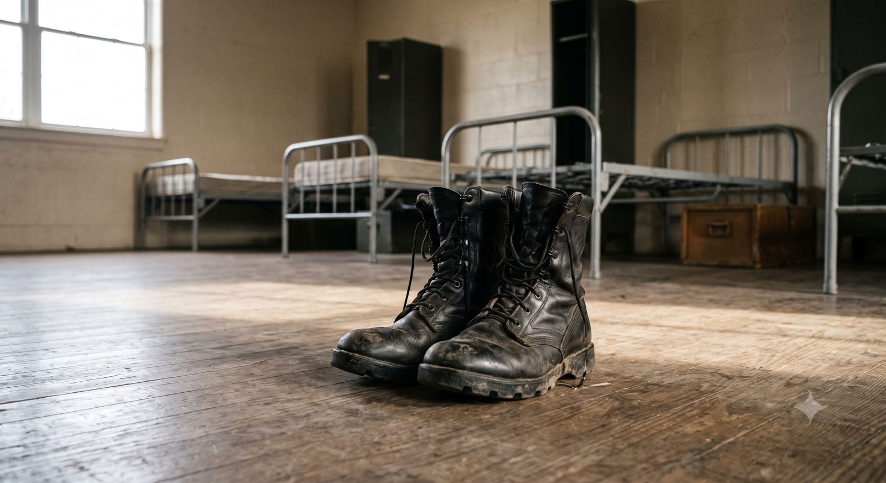

What happened
One call aboutmissing boots.
The act attributed to Cadet Sanopao was in the morning: a call about missing combat boots. The hospital then examined Dormitorio for hours and found no fresh injury. The medical witnesses placed the massive, fatal injury later, after the discharge.
The charge
What he was actually charged with
The Amended Charge Sheet accused Cadet Sanopao of a single act under Article of War 97 (conduct prejudicial to good order and military discipline): that on 17 September 2019 he did "instigate/order the physical maltreatment" committed by Cadet Shalimar Imperial Jr. and Cadet Felix Lumbag Jr. against Cadet Darwin Dormitorio, "resulting to and contributing to the death of the latter."
He was not charged with murder, homicide, or torture. He was not accused of laying a hand on anyone. The entire case rested on one theory: that he gave an order. And the prosecution confirmed on the record that it would not prove conspiracy. In law, that means only his own act could be charged to him, not the acts of the others or the death itself.
Amended Charge Sheet; TSN 5 February 2021, p. 7; Pre-Trial Order, 5 March 2021
17 to 18 September 2019
The day, hour by hour.
The entire case against Cadet Sanopao begins with missing combat boots.
The combat boots
Cadet Sanopao called Cadet Dormitorio about combat boots he had entrusted to him. When the boots could not be found, he told Dormitorio to have his two assigned "buddies," Cadet Imperial and Cadet Lumbag, help look for them. This is the sole act the prosecution calls an "order."
Brought to the PMA Station Hospital
Dormitorio was admitted and observed for roughly seven hours by the attending physician, Capt. Flor Apple Apostol, and the duty nurse, 2Lt. Cathrynne Ruzzelle Caterial-Bulatao. He was assessed for a urinary tract infection; his whole body was seen.
Discharged and cleared
He was discharged with normal vital signs and no fresh injury, only an old, healing bruise from an earlier consultation. He was cleared to return to barracks. Cadet Sanopao had no further contact with him.
Further assaults by others
After discharge, the record describes Dormitorio being assaulted again by other cadets through the evening, and his condition worsening overnight.
Death
Dormitorio collapsed and died in the early morning hours and was pronounced dead on arrival at the hospital. The cause of death was blunt abdominal trauma with massive internal bleeding.
The civilian case
A civilian prosecutor dismissed the same facts
The Office of the City Prosecutor of Baguio City reviewed the very same witnesses and documents. Applying probable cause (the lowest threshold in our law), it dismissed all charges against Cadet Sanopao on 5 June 2020, and affirmed that dismissal when the complainants sought reconsideration.
"Justice for a fallen cadet does not mean an indictment that is free-for-all. The law may be harsh, but it is the law."
When a special panel of prosecutors later acted on an order of the Regional Trial Court, it amended the murder Information to name only Cadet Imperial and Cadet Lumbag. Cadet Sanopao was named in no Information, in any court.